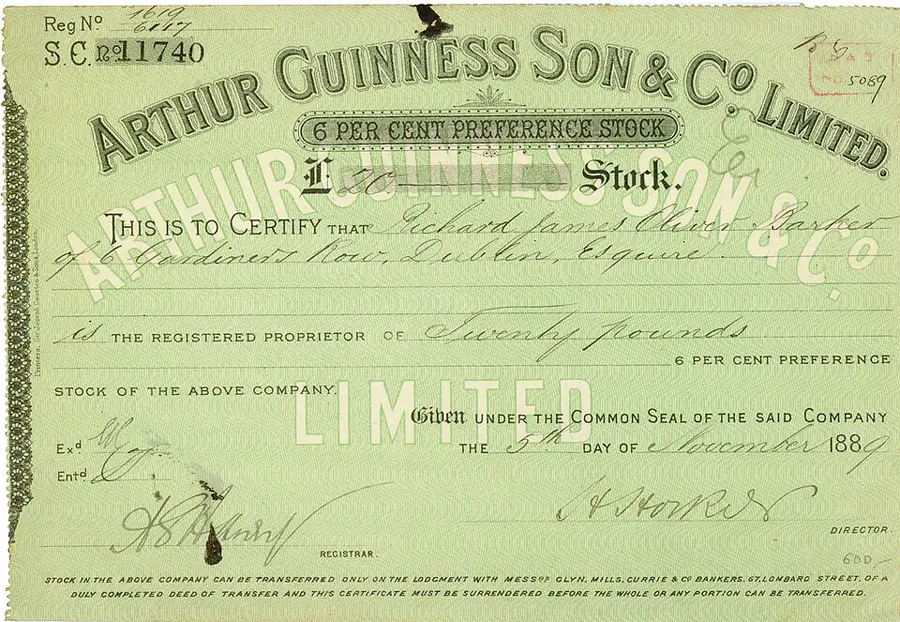

대표 로고대표 브랜드 마크
대표 로고대표 브랜드 마크기네스 Guinness
기네스(Guinness)는 18세기 아일랜드 더블린의 세인트 제임스 게이트 양조장에서 아서 기니스가 시작한 스타우트 맥주 브랜드이다. 현재는 영국의 다국적 주류 기업 Diageo가 소유한다.
최종 업데이트
기네스는 어떤 브랜드인가
기네스는 맥아 보리와 볶은 비맥아 보리에서 맛이 나오는 스타우트 맥주이다. 세계에서 가장 성공한 주류 브랜드 가운데 하나로, 거의 50개국에서 양조되고 120개국이 넘는 곳에서 판매되며, 2011년 판매량은 850,000,000리터였다.
아일랜드와 영국 두 나라 모두에서 가장 많이 팔리는 맥주이다. 생맥주의 두껍고 부드러운 거품은 맥주에 질소와 이산화탄소를 섞어 만든다.
맛의 특징인 'tang'은 지금도 남아 있지만, 회사는 숙성한 맥주를 섞는 방식이 아직 쓰이는지 확인하지 않았다. 더블린 세인트 제임스 게이트 양조장 안의 기네스 스토어하우스는 2000년에 문을 연 관광 명소이다.
기네스는 어떻게 시작되고 성장했나
아서 기니스는 1759년 더블린 세인트 제임스 게이트 양조장에서 에일 양조를 시작했다. 같은 해 12월 31일에는 사용하지 않던 이 양조장을 연 £45에 9,000년간 임차하는 계약을 맺었다.
1778년에 포터 판매를 시작했고, 1840년대에 Single Stout와 Double Stout가 '스타우트'라는 용어를 쓴 첫 기네스 맥주가 되었다. 1886년 10월 기네스는 주식회사가 되었고 주식은 20배 초과 청약되었다.
1932년 영국·아일랜드 무역 전쟁이 시작되자 본사를 런던으로 옮겼으며, 1997년 Guinness plc가 Grand Metropolitan과 합병해 Diageo plc가 되었다.
기네스의 브랜드 아이덴티티는 무엇인가
아서 기니스가 1759년 더블린에서 시작한 아일랜드 스타우트로, 질소를 섞은 두껍고 부드러운 거품과 하프 상표로 구분되는 브랜드이다.
기네스의 대표 제품과 서비스는 무엇인가
역사의 대부분 동안 기네스는 한 가지 맥주 유형의 세 가지 변형만 생산했다. 포터 또는 스타우트(싱글, 더블, 엑스트라)와 수출용 foreign stout이다.
'Stout'는 원래 맥주의 도수를 가리켰으나 점차 바디감과 색을 뜻하는 말로 바뀌었다. 생맥주는 질소와 이산화탄소를 섞어 두껍고 부드러운 거품을 낸다.
트리니티 칼리지 하프를 본뜬 오른쪽 방향의 하프 문양은 1876년 기네스의 상표로 등록되었다.
기네스는 지금 어떤 상태인가
기네스는 런던에 본사를 둔 다국적 주류 기업 Diageo가 소유한다. 거의 50개국에서 양조되고 120개국이 넘는 곳에서 판매되며, 아일랜드와 영국에서 가장 많이 팔리는 맥주이다.
더블린 세인트 제임스 게이트 양조장의 스토어하우스는 2000년 개장 이후 관광 명소로 방문객을 맞고 있다.
기네스 로고는 어떻게 변해왔나
대표 로고대표 브랜드 마크사진으로 보는 기네스의 역사

자주 묻는 질문
기네스는 어느 나라 브랜드인가요?
기네스는 영국의 식음료 브랜드입니다.
기네스의 브랜드 아이덴티티는 무엇인가요?
아서 기니스가 1759년 더블린에서 시작한 아일랜드 스타우트로, 질소를 섞은 두껍고 부드러운 거품과 하프 상표로 구분되는 브랜드이다.
기네스의 대표 제품은 무엇인가요?
역사의 대부분 동안 기네스는 한 가지 맥주 유형의 세 가지 변형만 생산했다.
기네스는 어느 기업이 소유하고 있나요?
기네스는 런던에 본사를 둔 다국적 주류 기업 Diageo가 소유한다.
기네스의 창업자는 누구인가요?
기네스의 창업자는 아서 기니스입니다(위키데이터 기준).
기네스의 본사는 어디에 있나요?
기네스의 본사는 Guinness Brewery에 있습니다(위키데이터 기준).
기네스의 공식 웹사이트는 어디인가요?
기네스의 공식 웹사이트는 https://www.guinness.com/ 입니다.
출처와 검증
기네스 관련 참고: 공식 웹사이트 · 위키데이터 Q194297 · 한국어 위키백과 · 영어 위키백과. 브랜드명은 한글과 원어를 함께 표기하되 데이터에 없는 표기는 만들지 않습니다. 기원 국가·설립연도는 검수된 정의문에서 확인된 값을 우선하고, 없을 때만 공식 웹사이트 URL이 일치하는 위키데이터 개체의 값을 씁니다. 위키데이터 값은 2026-11-07 기준입니다.